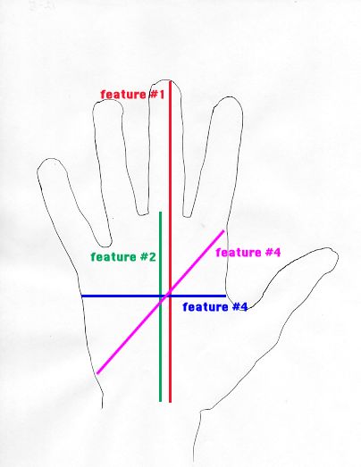

Hand Geometry Recognition. Hand geometry recognition is a form of biometrics, where the shape of a person's hand is used to recognize. This is similar to finger print recognition or iris recognition, but limited due to the fact that hand shape is less unique among individuals than other more commonly used biometrics are. None the less, this project seeks to recognize an individual from their hand shape using feature extraction and classification.
Project Keywords: | Java | Biometrics | Probability and Statistics | Data Classification 
Implementation Process: Given a set of data, which in my case consisted of 100 hand shape images, extracted from 20 individuals, I first determined what features to use. As a requirement in biometrics it is important to that chosen features are ones that are common to all hands, but have values that are fairly unique so that they can be used to distinguish a pecific given hand. The features I selected with these requirements in mind were four different lengths found in a hand shown to the left. Once the features were selected and then measured. I implemented a classifier, or a software program which will take the four features of one hand and compare it with features from multiple hands stored in a database, and output which person the hand most likely belongs to. For classification I used a Naive Bayesian classifier and had an accuracy of over 70%.